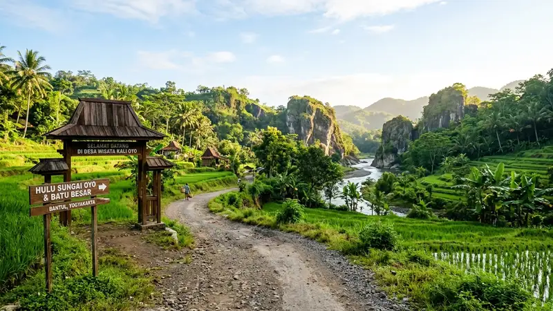

Rute menuju Taman Wisata Batu Kapal ditempuh dari pusat Yogyakarta melalui Jalan Jogja-Wonosari menuju Piyungan, dengan tiket masuk bersifat sukarela dan biaya tambahan hanya untuk kebutuhan khusus.
- Rute utama mengikuti Jalan Jogja-Wonosari hingga simpang tiga BUKP Piyungan, lalu masuk melalui gapura Klenggotan
- Jarak tempuh dari pusat Kota Yogyakarta sekitar 13 kilometer
- Tiket masuk bersifat sukarela tanpa tarif resmi yang ditetapkan
- Biaya tambahan umumnya hanya berlaku untuk kebutuhan khusus seperti sesi foto prewedding
- Lokasi buka setiap hari pukul 07.30-17.30 WIB tanpa hari libur khusus
Bagaimana Rute Menuju Taman Wisata Batu Kapal dari Pusat Yogyakarta?
Rute menuju Taman Wisata Batu Kapal dari pusat Kota Yogyakarta dimulai dengan mengarah ke selatan melalui Jalan Sosrokusuman, kemudian berbelok ke arah timur hingga mencapai simpang empat di Jalan Gedongkuning.
Dari titik tersebut, perjalanan dilanjutkan menyusuri Jalan Jogja-Wonosari melewati kawasan wisata Kids Fun sebagai penanda arah. Setelah melintasi perempatan berikutnya, wisatawan mengambil arah timur hingga tiba di jembatan yang melintasi Kali Opak, kemudian melewati Pasar Wage di sisi timur jembatan tersebut.
Perjalanan diteruskan ke arah timur hingga bertemu simpang tiga BUKP Kecamatan Piyungan. Dari persimpangan ini, wisatawan berbelok ke kiri menuju utara dan masuk melalui gapura bertuliskan "Klenggotan". Dari gapura tersebut, wisatawan tinggal mengikuti papan penunjuk arah yang mengarahkan langsung menuju lokasi Batu Kapal, yang berjarak sekitar satu kilometer di utara Jalan Jogja-Wonosari.
Berapa Kisaran Biaya yang Dibutuhkan untuk Berkunjung?
Komponen biaya utama saat berkunjung ke Taman Wisata Batu Kapal terdiri dari kontribusi tiket masuk yang bersifat sukarela, biaya parkir kendaraan, serta pengeluaran untuk jajanan di warung sekitar lokasi.
Karena tiket masuk tidak memiliki tarif resmi, jumlah kontribusi sepenuhnya diserahkan kepada kebijaksanaan masing-masing pengunjung sebagai dukungan terhadap pengelolaan kawasan wisata yang dijalankan secara swadaya oleh warga. Biaya tambahan umumnya hanya berlaku untuk kebutuhan khusus, seperti sesi foto prewedding yang memerlukan biaya sewa tempat tersendiri di luar tiket masuk pengunjung umum.
Secara keseluruhan, total biaya kunjungan ke kawasan ini tergolong terjangkau dibandingkan destinasi wisata alam berbayar lain di sekitar Yogyakarta, sehingga cocok dijadikan pilihan wisata singkat dengan anggaran terbatas.
Jam Berapa Saja Taman Wisata Batu Kapal Buka untuk Umum?
Taman Wisata Batu Kapal buka setiap hari tanpa hari libur khusus, mulai pukul 07.30 hingga 17.30 WIB. Jam operasional yang konsisten ini memberi keleluasaan bagi wisatawan untuk berkunjung baik pada hari kerja maupun akhir pekan.
Meski buka sepanjang hari dalam rentang waktu tersebut, wisatawan disarankan untuk tiba pada pagi hari agar mendapatkan suasana yang lebih tenang sekaligus pencahayaan alami terbaik untuk berfoto, mengingat kawasan ini cenderung lebih ramai menjelang siang, terutama pada akhir pekan.
Apa Saja Persiapan Teknis Sebelum Berangkat?
Sebelum berangkat menuju Taman Wisata Batu Kapal, ada beberapa persiapan teknis yang dapat membantu perjalanan lebih lancar.
- Gunakan aplikasi navigasi digital sebagai pelengkap, namun tetap perhatikan papan penunjuk arah fisik di sekitar gapura Klenggotan
- Isi bahan bakar kendaraan secukupnya karena sebagian jalur menuju lokasi berada di kawasan pedesaan dengan akses pom bensin terbatas
- Siapkan uang tunai secukupnya untuk kontribusi tiket, parkir, dan jajanan, mengingat fasilitas pembayaran digital belum tentu tersedia merata
- Cek kondisi cuaca sebelum berangkat, khususnya saat musim hujan yang dapat memengaruhi kondisi jalan pedesaan
- Berangkat pagi hari untuk menghindari kepadatan lalu lintas di jalur Jogja-Wonosari saat jam sibuk
FAQ
Berapa jarak Taman Wisata Batu Kapal dari pusat Kota Yogyakarta?
Jaraknya sekitar 13 kilometer dari pusat Kota Yogyakarta melalui Jalan Jogja-Wonosari.
Apakah tiket masuk Taman Wisata Batu Kapal memiliki tarif tetap?
Tidak, tiket masuk bersifat sukarela tanpa tarif resmi yang ditetapkan oleh pengelola.
Apakah lokasi ini buka setiap hari termasuk hari libur?
Ya, lokasi ini buka setiap hari, termasuk akhir pekan dan hari libur, mulai pukul 07.30 hingga 17.30 WIB.
Arya
Siswa Skariga yang sedang belajar di Gm Academy.